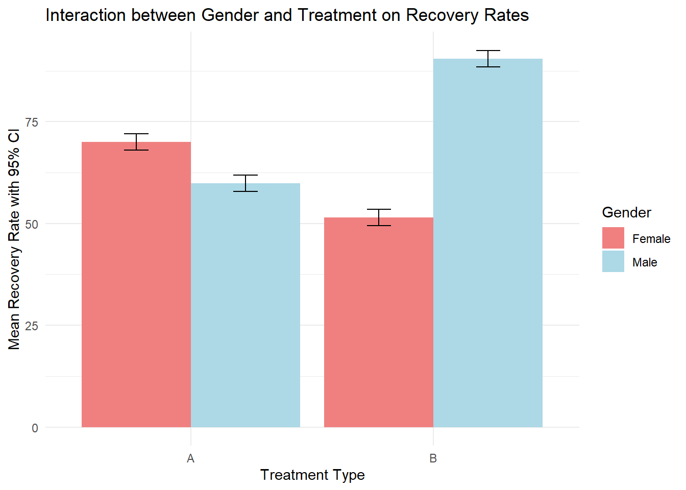
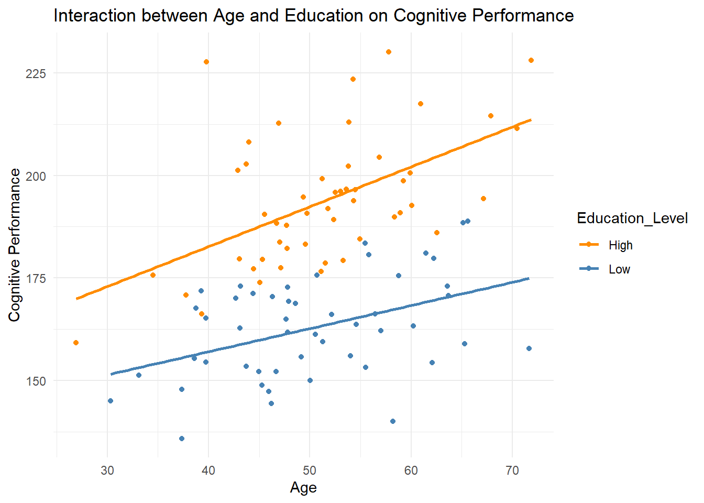
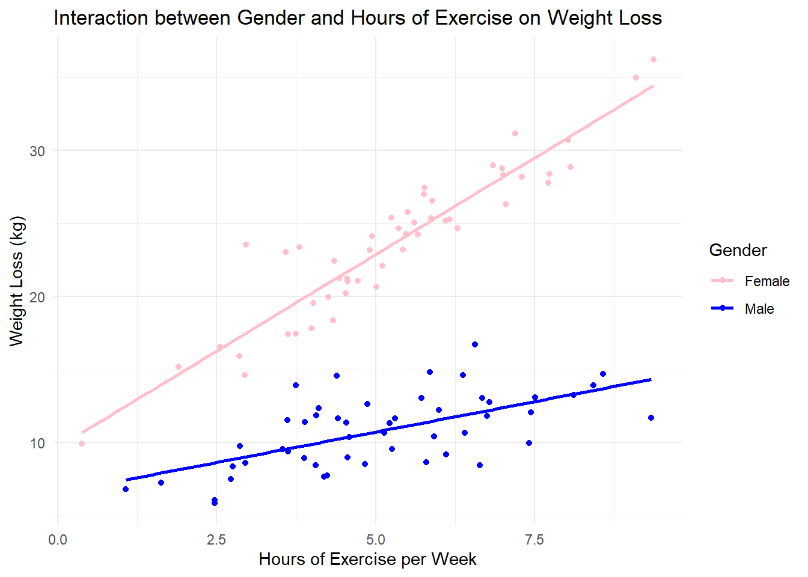
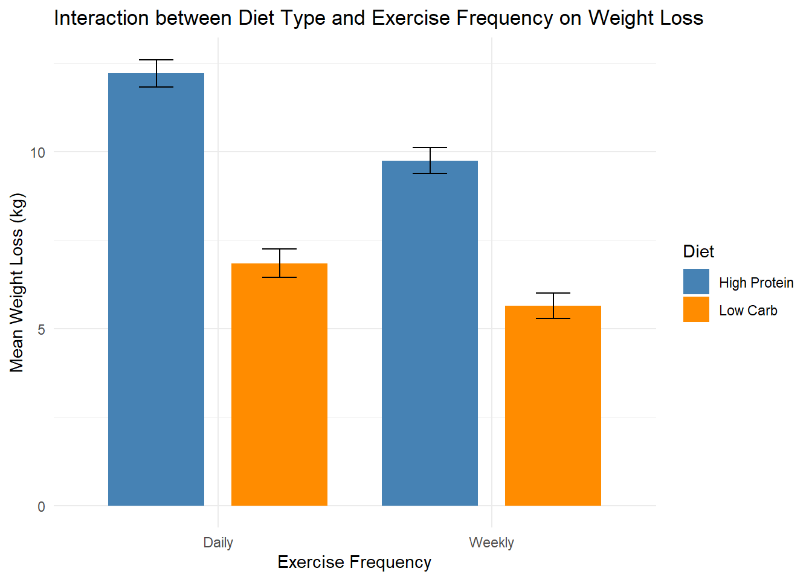
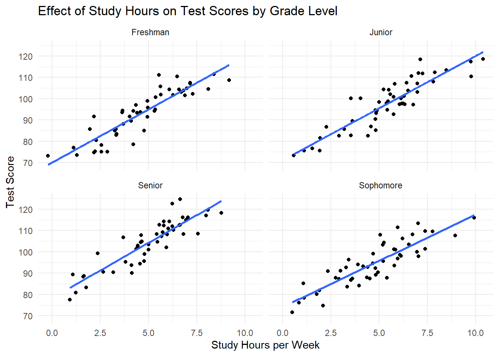
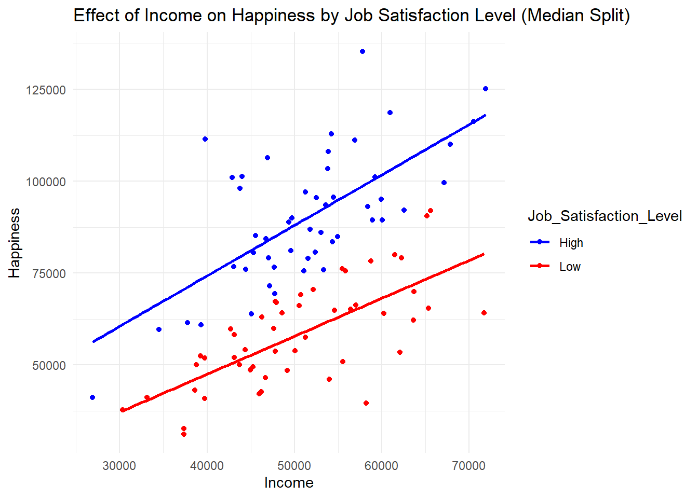

Chapter 12 Interactions in Regression Models
12.1 Introduction to Interactions
12.1.1 What Are Interactions?
In regression models, an interaction occurs when the effect of one variable on the outcome depends on the level of another variable. In simpler terms, interactions happen when the relationship between two variables is not straightforward but instead changes depending on another factor.
For example, let’s say you’re studying how a new therapy affects anxiety levels. You might find that the therapy is effective in reducing anxiety, but the effect of the therapy might be different for men compared to women. This difference means there’s an interaction between gender and the therapy—the impact of the therapy depends on whether the person is male or female.
In psychological research and many other fields, interactions are crucial because they help us understand the combined effects of variables. Without considering interactions, we might overlook important differences in how variables influence outcomes across different groups or conditions.
Real-World Example: Consider a study on how different types of support (e.g., emotional vs. practical) influence recovery from illness. The effectiveness of each type of support might depend on the patient’s age. Younger patients might benefit more from emotional support, while older patients might find practical support more beneficial. This situation shows an interaction between the type of support and the patient’s age.
12.1.2 Why Are Interactions Important?
Interactions are significant because they allow us to understand how variables work together to influence an outcome. In many cases, the effect of one variable isn’t uniform across all conditions—it might vary depending on another variable. By modeling interactions, we can gain a deeper and more accurate understanding of the relationships between variables.
For instance, in psychological research, you might be interested in how stress affects health. However, the impact of stress on health could depend on the level of social support a person has. People with high levels of social support might cope with stress better, leading to less negative health outcomes, while those with low social support might experience more severe effects of stress. This interaction between stress and social support reveals a more nuanced understanding of how these factors work together.
Interactions can also uncover relationships that aren’t apparent when looking at variables independently. Without considering interactions, you might miss important insights, such as understanding why a treatment works well for one group but not another, or why a certain behavior leads to different outcomes in different contexts.
Examples in Psychological Research:
- Stress and Support: How stress interacts with social support to influence health outcomes.
- Treatment and Gender: How the effectiveness of a treatment varies by gender.
- Age and Learning: How the impact of a learning method differs across age groups.
Understanding interactions helps researchers and practitioners make more informed decisions and tailor interventions more effectively to different groups or conditions. By examining how variables interact, we can better predict outcomes and understand the complexities of human behavior and experiences.
12.2 Categorical x Categorical Interactions
12.2.1 Understanding Categorical x Categorical Interactions
Categorical x categorical interactions occur when the effect of one categorical variable on the outcome depends on the level of another categorical variable. In other words, the influence of one factor is not consistent across all levels of another factor.
To make this clear, let’s use a real-world example. Suppose you’re studying how different types of treatment (e.g., Medication A and Medication B) affect recovery rates in patients. Additionally, you want to see if this effect is different for men and women. Here, both gender (male, female) and treatment type (Medication A, Medication B) are categorical variables.
A categorical x categorical interaction would examine how the combination of these two variables influences recovery rates. For instance, Medication A might be more effective for men, while Medication B might work better for women. This difference in effectiveness indicates an interaction between gender and treatment type.
12.2.1.1 Modeling Categorical x Categorical Interactions
To include a categorical x categorical interaction in a regression model, we need to create an interaction term between the two categorical variables. When working with categorical variables in regression, it’s common to use effect coding instead of the default dummy coding. Effect coding is particularly useful because it centers the variables, making the interpretation of the main effects more intuitive.
Effect coding assigns values of -0.5 and 0.5 to the levels of a categorical variable. For example, if we have a variable for gender, we can code males as -0.5 and females as 0.5. Similarly, for treatment type, we might code Medication A as -0.5 and Medication B as 0.5.
Here’s how you can model the interaction between gender and treatment type in R:
library(ggplot2)
# Increase the sample size with more extreme group differences
set.seed(123) # For reproducibility
# Generate data for 50 males and 50 females
Gender <- factor(rep(c("Male", "Female"), each = 50))
Treatment <- factor(rep(c("A", "B"), each = 25, times = 2))
# Assign more extreme recovery rates with random noise added
Recovery <- c(
rnorm(25, mean = 60, sd = 5), # Male, Treatment A
rnorm(25, mean = 90, sd = 5), # Male, Treatment B
rnorm(25, mean = 70, sd = 5), # Female, Treatment A
rnorm(25, mean = 50, sd = 5) # Female, Treatment B
)
# Create a data frame
data <- data.frame(Gender, Treatment, Recovery)
# Apply effect coding
data$Gender_Effect <- ifelse(data$Gender == "Male", -0.5, 0.5)
data$Treatment_Effect <- ifelse(data$Treatment == "A", -0.5, 0.5)
# Fit the regression model with interaction
model <- lm(Recovery ~ Gender_Effect * Treatment_Effect, data = data)
# Display the model summary
summary(model)##
## Call:
## lm(formula = Recovery ~ Gender_Effect * Treatment_Effect, data = data)
##
## Residuals:
## Min 1Q Median 3Q Max
## -11.5970 -2.8385 -0.2066 3.0467 10.3341
##
## Coefficients:
## Estimate Std. Error t value Pr(>|t|)
## (Intercept) 67.9520 0.4593 147.935 < 2e-16 ***
## Gender_Effect -14.4400 0.9187 -15.718 < 2e-16 ***
## Treatment_Effect 6.0195 0.9187 6.552 2.82e-09 ***
## Gender_Effect:Treatment_Effect -49.3157 1.8373 -26.841 < 2e-16 ***
## ---
## Signif. codes: 0 '***' 0.001 '**' 0.01 '*' 0.05 '.' 0.1 ' ' 1
##
## Residual standard error: 4.593 on 96 degrees of freedom
## Multiple R-squared: 0.9132, Adjusted R-squared: 0.9105
## F-statistic: 336.8 on 3 and 96 DF, p-value: < 2.2e-16To further explore the significant differences between the groups, we can perform post hoc tests after fitting the regression model. Post hoc tests allow us to compare the means of different groups to see which specific group differences are statistically significant.
12.2.2 Step-by-Step Guide to Adding Post Hoc Tests
12.2.2.1 Post Hoc Tests Using emmeans
We can use the emmeans package to perform post hoc comparisons. This package allows us to estimate the marginal means (also known as least-squares means) and conduct pairwise comparisons between groups.
First, we need to load the emmeans package (or install first it if it is not already installed):
## Warning: package 'emmeans' was built under R version 4.3.3## Welcome to emmeans.
## Caution: You lose important information if you filter this package's results.
## See '? untidy'Estimating Marginal Means and Performing Pairwise Comparisons
After fitting the model, we can estimate the marginal means for each group and perform pairwise comparisons to see which group differences are statistically significant.
# Re-create the model using the categorical variables (it makes it easier to interpret)
model_cat <- lm(Recovery ~ Gender * Treatment, data = data)
# Estimate marginal means (emmeans) for the interaction of Gender and Treatment
emmeans_model <- emmeans(model_cat, ~ Gender * Treatment)
# Display the estimated marginal means
emmeans_model## Gender Treatment emmean SE df lower.CL upper.CL
## Female A 70.1 0.919 96 68.2 71.9
## Male A 59.8 0.919 96 58.0 61.7
## Female B 51.4 0.919 96 49.6 53.2
## Male B 90.5 0.919 96 88.7 92.3
##
## Confidence level used: 0.95# Perform pairwise comparisons (post hoc tests) with Tukey adjustment for multiple comparisons
pairwise_comparisons <- pairs(emmeans_model, adjust = "tukey")
# Display the pairwise comparisons
pairwise_comparisons## contrast estimate SE df t.ratio p.value
## Female A - Male A 10.22 1.3 96 7.865 <.0001
## Female A - Female B 18.64 1.3 96 14.346 <.0001
## Female A - Male B -20.46 1.3 96 -15.748 <.0001
## Male A - Female B 8.42 1.3 96 6.481 <.0001
## Male A - Male B -30.68 1.3 96 -23.613 <.0001
## Female B - Male B -39.10 1.3 96 -30.094 <.0001
##
## P value adjustment: tukey method for comparing a family of 4 estimates12.2.2.2 Interpretation of Post Hoc Test Results
- Estimated Marginal Means (emmeans):
- The
emmeansoutput shows the mean recovery rates for each combination of gender and treatment type, adjusted for the other variables in the model.
- The
- Pairwise Comparisons:
- The
pairs()function provides the pairwise comparisons between the different levels of gender and treatment. - The p-values indicate whether the difference between the means of two groups is statistically significant.
- The Tukey adjustment controls for the increased risk of Type I error due to multiple comparisons.
- The
For example, the pairwise comparisons might show:
- Male with Treatment A vs. Male with Treatment B: A significant difference, indicating that Treatment B is significantly more effective for males.
- Female with Treatment A vs. Female with Treatment B: A significant difference, indicating that Treatment A is significantly more effective for females.
- Male with Treatment A vs. Female with Treatment A: A significant difference, showing that the effectiveness of Treatment A differs significantly by gender.
- Male with Treatment B vs. Female with Treatment B: A significant difference, showing that the effectiveness of Treatment B differs significantly by gender.
12.2.3 Visualizing the Results with Error Bars
We can also visualize the results, including confidence intervals, to further interpret the significant differences:
# Create a summary of the means and standard errors
means <- data %>%
group_by(Treatment, Gender) %>%
summarise(
Recovery = mean(Recovery),
SE = sd(Recovery) / sqrt(n())
)
# Plot the interaction with error bars
ggplot(means, aes(x = Treatment, y = Recovery, fill = Gender)) +
geom_bar(stat = "identity", position = "dodge") +
geom_errorbar(aes(ymin = Recovery - 2*5/sqrt(25), ymax = Recovery + 2*5/sqrt(25)),
width = 0.2, position = position_dodge(0.9)) +
labs(title = "Interaction between Gender and Treatment on Recovery Rates",
x = "Treatment Type", y = "Mean Recovery Rate with 95% CI") +
scale_fill_manual(values = c("Male" = "lightblue", "Female" = "lightcoral")) +
theme_minimal()
- Error Bars: Represent the 95% confidence intervals around the estimated means. If the error bars for two groups do not overlap, this typically indicates a statistically significant difference between those groups.
12.2.4 Conclusion
With these post hoc tests, you can clearly identify which specific group differences are statistically significant. The combination of the emmeans package for pairwise comparisons and visualizations with error bars helps to thoroughly explore and interpret the interaction effects in your data.
Using bar graphs to visualize categorical x categorical interactions is a powerful way to clearly communicate the combined effects of variables. It allows for an easy comparison of group means and helps in understanding how different combinations of variables influence the outcome.
12.3 Linear x Linear Interactions
12.3.1 Understanding Linear x Linear Interactions
Linear x linear interactions occur when the relationship between two continuous (linear) variables changes depending on the level of another continuous variable. In other words, the effect of one variable on an outcome isn’t the same across all levels of another variable—it varies depending on the values of both variables.
Let’s break this down with an example. Imagine you are studying how age and education level influence cognitive performance. Both age and education level are continuous variables. You might find that the effect of age on cognitive performance changes depending on the level of education. For instance, age might have a more pronounced negative effect on cognitive performance for individuals with lower education levels, while for those with higher education levels, age might have a smaller or even no effect.
This scenario illustrates a linear x linear interaction: the effect of age on cognitive performance is not constant but changes depending on education level.
12.3.2 Modeling Linear x Linear Interactions
To include a linear x linear interaction in a regression model, we create an interaction term between the two continuous variables. This interaction term allows us to see how the relationship between one variable and the outcome changes as the other variable changes.
Step-by-Step Guide to Modeling Linear x Linear Interactions:
Let’s say we want to model the interaction between age and education on cognitive performance. Here’s how you can do this in R:
- Create the dataset:
# Simulating data
set.seed(123)
Age <- rnorm(100, mean = 50, sd = 10) # Continuous variable: Age
Education <- rnorm(100, mean = 16, sd = 3) # Continuous variable: Years of Education
Cognitive_Performance <- 100 - 0.5 * Age + 1.5 * Education + 0.1 * Age * Education + rnorm(100, sd = 5)
# Create a data frame
data <- data.frame(Age, Education, Cognitive_Performance)In this simulated data: - Age: Represents the age of the individuals. - Education: Represents the number of years of education. - Cognitive_Performance: A score representing cognitive performance.
- Fit the regression model with the interaction term:
# Fit the regression model with an interaction term between Age and Education
model <- lm(Cognitive_Performance ~ Age * Education, data = data)
# Display the model summary
summary(model)##
## Call:
## lm(formula = Cognitive_Performance ~ Age * Education, data = data)
##
## Residuals:
## Min 1Q Median 3Q Max
## -9.360 -3.389 -0.543 2.949 11.583
##
## Coefficients:
## Estimate Std. Error t value Pr(>|t|)
## (Intercept) 123.32358 14.85795 8.300 6.55e-13 ***
## Age -0.97069 0.29544 -3.286 0.00142 **
## Education 0.23135 0.95569 0.242 0.80924
## Age:Education 0.12652 0.01908 6.630 1.96e-09 ***
## ---
## Signif. codes: 0 '***' 0.001 '**' 0.01 '*' 0.05 '.' 0.1 ' ' 1
##
## Residual standard error: 4.734 on 96 degrees of freedom
## Multiple R-squared: 0.9511, Adjusted R-squared: 0.9496
## F-statistic: 622.5 on 3 and 96 DF, p-value: < 2.2e-16- The model includes the main effects of both Age and Education, as well as their interaction (Age * Education).
- Main effects: Show how each variable (Age and Education) affects cognitive performance individually.
- Interaction term (Age:Education): Shows how the effect of Age on cognitive performance changes depending on the level of Education, and vice versa.
Interpreting Interaction Terms:
- Main Effects (Age and Education):
- Age: Represents the average effect of age on cognitive performance, holding education constant.
- Education: Represents the average effect of education on cognitive performance, holding age constant.
- Interaction Term (Age:Education):
- This term tells us how the relationship between age and cognitive performance changes at different levels of education. If the interaction term is significant, it suggests that the effect of age on cognitive performance varies depending on the level of education.
12.3.3 Visualizing Linear x Linear Interactions
Visualizing linear x linear interactions can be done in a few different ways, depending on the complexity of the data and the message you want to convey.
Option 1: 3D Surface Plot
A 3D surface plot allows you to visualize the interaction between two continuous variables in a way that shows how the outcome variable changes across the full range of both predictors.
Here’s how to create a 3D plot in R:
# Install (if not already installed) and load the rgl package for 3D plotting
if(!require(rgl)){install.packages("rgl", dependencies=TRUE)}## Loading required package: rgl## Warning: package 'rgl' was built under R version 4.3.3library(rgl)
# Create a 3D scatter plot with a surface
plot3d(data$Age, data$Education, data$Cognitive_Performance,
xlab = "Age", ylab = "Education", zlab = "Cognitive Performance",
col = "blue", size = 3)
rglwidget()
- 3D Scatter Plot: Shows individual data points in a 3D space, with Age on the x-axis, Education on the y-axis, and Cognitive Performance on the z-axis.
- Surface: Represents the predicted values of Cognitive Performance from the model, allowing you to see how performance changes with age and education.
Option 2: 2D Plot by Splitting One Variable
For a simpler visualization, you can split one of the continuous variables into categories (e.g., high vs. low) and create a 2D plot with lines representing the interaction.
Here’s how to create a 2D plot by splitting Education into high and low groups:
# Create a new variable to categorize Education into High and Low
data$Education_Level <- ifelse(data$Education > median(data$Education), "High", "Low")
# Plot Cognitive Performance vs. Age, colored by Education Level
ggplot(data, aes(x = Age, y = Cognitive_Performance, color = Education_Level)) +
geom_point() +
geom_smooth(method = "lm", se = FALSE) +
labs(title = "Interaction between Age and Education on Cognitive Performance",
x = "Age", y = "Cognitive Performance") +
scale_color_manual(values = c("High" = "darkorange", "Low" = "steelblue")) +
theme_minimal()## `geom_smooth()` using formula = 'y ~ x'
Interpreting the 2D Plot:
- Lines: Represent the relationship between Age and Cognitive Performance for individuals with High and Low levels of Education.
- Interaction: If the slopes of the lines differ, it indicates an interaction—meaning the effect of Age on Cognitive Performance changes depending on whether someone has high or low education.
12.3.4 Conclusion
Linear x linear interactions provide a way to understand how the relationship between two continuous variables affects an outcome. By modeling and visualizing these interactions, you can uncover complex relationships in your data that wouldn’t be apparent by looking at each variable in isolation.
12.4 Categorical x Linear Interactions
12.4.1 Understanding Categorical x Linear Interactions
Categorical x linear interactions occur when the relationship between a continuous (linear) variable and an outcome changes depending on the level of a categorical variable. This means that the effect of the continuous variable is not consistent across all categories of the categorical variable; instead, it varies depending on which category is being considered.
Let’s consider a real-world example. Suppose you’re studying how hours of exercise (a continuous variable) influence weight loss. Additionally, you want to see if this effect differs by gender (a categorical variable with levels: Male and Female). You might find that the relationship between exercise and weight loss differs between men and women. For example, men might lose more weight per hour of exercise than women, indicating an interaction between gender and hours of exercise.
This scenario illustrates a categorical x linear interaction: the effect of hours of exercise on weight loss is not the same for men and women.
12.4.2 Modeling Categorical x Linear Interactions
To model a categorical x linear interaction in a regression analysis, we create an interaction term between the categorical variable and the continuous variable. In this case, we’ll use effect coding for the categorical variable, which assigns -0.5 and 0.5 to the levels of the categorical variable (e.g., Male = -0.5, Female = 0.5). Effect coding is useful because it centers the categorical variable, making the interpretation of main effects more intuitive.
Step-by-Step Guide to Modeling Categorical x Linear Interactions:
Let’s model the interaction between gender and hours of exercise on weight loss:
- Create the dataset:
# Simulate data
set.seed(123)
Gender <- factor(rep(c("Male", "Female"), each = 50))
Gender_Effect <- ifelse(Gender == "Male", -0.5, 0.5) # Effect coding for Gender
Hours_Exercise <- rnorm(100, mean = 5, sd = 2) # Continuous variable: Hours of Exercise
Weight_Loss <- 8 + 1.8 * Hours_Exercise + 1.5 * Gender_Effect +
2 * Hours_Exercise * Gender_Effect + rnorm(100, sd = 2)
# Create a data frame
data <- data.frame(Gender, Gender_Effect, Hours_Exercise, Weight_Loss)In this simulated data:
- Gender: Represents the gender of the participants (Male or Female).
- Gender_Effect: Uses effect coding where Male = -0.5 and Female = 0.5.
- Hours_Exercise: Represents the number of hours of exercise per week.
- Weight_Loss: Represents the weight loss in kilograms.
- Fit the regression model with the interaction term:
# Fit the regression model with an interaction term between Gender and Hours_Exercise
model <- lm(Weight_Loss ~ Gender_Effect * Hours_Exercise, data = data)
# Display the model summary
summary(model)##
## Call:
## lm(formula = Weight_Loss ~ Gender_Effect * Hours_Exercise, data = data)
##
## Residuals:
## Min 1Q Median 3Q Max
## -3.6477 -1.3501 -0.1938 1.2221 6.0301
##
## Coefficients:
## Estimate Std. Error t value Pr(>|t|)
## (Intercept) 8.1313 0.5847 13.908 < 2e-16 ***
## Gender_Effect 3.0935 1.1693 2.646 0.00953 **
## Hours_Exercise 1.7352 0.1065 16.301 < 2e-16 ***
## Gender_Effect:Hours_Exercise 1.8082 0.2129 8.493 2.54e-13 ***
## ---
## Signif. codes: 0 '***' 0.001 '**' 0.01 '*' 0.05 '.' 0.1 ' ' 1
##
## Residual standard error: 1.93 on 96 degrees of freedom
## Multiple R-squared: 0.9375, Adjusted R-squared: 0.9356
## F-statistic: 480.2 on 3 and 96 DF, p-value: < 2.2e-16- The model includes the main effects of both Gender_Effect and Hours_Exercise, as well as their interaction (Gender_Effect:Hours_Exercise).
- Main effects: Show how each variable (Gender_Effect and Hours_Exercise) affects weight loss individually.
- Interaction term (Gender_Effect:Hours_Exercise): Shows how the effect of Hours_Exercise on weight loss changes depending on Gender.
Interpreting Interaction Terms:
- Main Effects (Gender_Effect and Hours_Exercise):
- Gender_Effect: Represents the average difference in weight loss between genders, holding exercise constant.
- Hours_Exercise: Represents the effect of an additional hour of exercise on weight loss, averaged across genders.
- Interaction Term (Gender_Effect:Hours_Exercise):
- This term tells us how the relationship between exercise and weight loss differs for men and women. If the interaction term is significant, it suggests that the effect of exercise on weight loss varies depending on gender.
12.4.3 Visualizing Categorical x Linear Interactions
Visualizing categorical x linear interactions can help to better understand how the relationship between the continuous variable and the outcome varies across different levels of the categorical variable. One effective way to visualize these interactions is to use an interaction plot, where different lines represent different categories of the categorical variable.
Here’s how you can create an interaction plot in R using ggplot2:
library(ggplot2)
# Plot Weight Loss vs. Hours of Exercise, with lines for each Gender
ggplot(data, aes(x = Hours_Exercise, y = Weight_Loss, color = Gender)) +
geom_point() +
geom_smooth(method = "lm", se = FALSE) +
labs(title = "Interaction between Gender and Hours of Exercise on Weight Loss",
x = "Hours of Exercise per Week", y = "Weight Loss (kg)") +
scale_color_manual(values = c("Male" = "blue", "Female" = "pink")) +
theme_minimal()## `geom_smooth()` using formula = 'y ~ x'
Interpreting the Interaction Plot:
- Lines: Represent the relationship between Hours_Exercise and Weight_Loss for each Gender.
- Interaction: If the slopes of the lines differ, it indicates an interaction. For example, if the line for females is steeper than the line for males, it suggests that women lose more weight per hour of exercise than men, showing a significant interaction between gender and exercise.
This type of plot clearly visualizes how the effect of the continuous variable (Hours of Exercise) on the outcome (Weight Loss) differs across levels of the categorical variable (Gender).
12.4.4 Conclusion
Categorical x linear interactions are crucial for understanding how the effect of a continuous variable on an outcome can vary depending on the level of a categorical variable. By using effect coding and visualizing these interactions, researchers can gain deeper insights into how variables interact across different groups.
12.5 Graphing Multivariate Models
12.5.1 Importance of Visualizing Multivariate Models
Visualizing multivariate models, especially those involving interactions, is crucial for fully understanding and communicating the complex relationships within your data. While numerical summaries and statistical outputs are essential, they can sometimes obscure the nuanced ways in which variables interact. Graphs make these relationships clearer and more accessible, allowing both researchers and audiences to see how different variables combine to influence an outcome.
Why Visualizing Interactions is Important:
- Clarifies Complex Relationships: Interactions, by their nature, are about how the effect of one variable depends on another. A graph can show this dependency more intuitively than a table of coefficients.
- Reveals Hidden Patterns: Sometimes, interactions reveal patterns that aren’t apparent from a simple examination of the main effects.
- Enhances Communication: Visuals are a powerful tool for explaining complex models to audiences who may not be familiar with statistical jargon.
Common Challenges and Pitfalls in Visualizing Interactions:
- Overcomplicated Graphs: With multiple variables, it’s easy to create graphs that are too complex to interpret. It’s important to focus on clarity and simplicity.
- Misleading Visuals: Poor choice of scales, colors, or layouts can lead to misinterpretations of the data.
- Ignoring Confounding Variables: When visualizing interactions, it’s important to consider potential confounders that might affect the interpretation of the interaction.
12.5.2 Types of Graphs for Interactions
There are several types of graphs that are particularly useful for visualizing interactions in multivariate models. Each type of graph has its strengths and is suited to different types of interactions.
12.5.2.1 Bar Graphs
Bar graphs are a straightforward way to visualize how the effect of one variable changes across the levels of another variable. They are particularly useful for categorical x categorical interactions and categorical x linear interactions.
Example:
Imagine you’re studying how diet type (e.g., High Protein, Low Carb) interacts with exercise frequency (e.g., Daily, Weekly) to affect weight loss. An interaction plot would show how the relationship between exercise frequency and weight loss changes depending on the diet type.
library(ggplot2)
library(dplyr)
# Simulated data
Diet <- factor(rep(c("High Protein", "Low Carb"), each = 50))
Exercise_Frequency <- factor(rep(c("Daily", "Weekly"), each = 25, times = 2))
Weight_Loss <- ifelse(Diet == "High Protein", 10 + 2 * (Exercise_Frequency == "Daily"),
5 + 1.5 * (Exercise_Frequency == "Daily")) + rnorm(100, sd = 2)
data <- data.frame(Diet, Exercise_Frequency, Weight_Loss)
# Calculate group means and standard errors
group_summary <- data %>%
group_by(Diet, Exercise_Frequency) %>%
summarise(
Mean_Weight_Loss = mean(Weight_Loss),
SE_Weight_Loss = sd(Weight_Loss) / sqrt(n())
)
# Plot bar graph with standard error bars
ggplot(group_summary, aes(x = Exercise_Frequency, y = Mean_Weight_Loss, fill = Diet)) +
geom_bar(stat = "identity", position = position_dodge(width = 0.9), width = 0.7) +
geom_errorbar(aes(ymin = Mean_Weight_Loss - SE_Weight_Loss, ymax = Mean_Weight_Loss + SE_Weight_Loss),
position = position_dodge(width = 0.9), width = 0.25) +
labs(title = "Interaction between Diet Type and Exercise Frequency on Weight Loss",
x = "Exercise Frequency", y = "Mean Weight Loss (kg)") +
scale_fill_manual(values = c("High Protein" = "steelblue", "Low Carb" = "darkorange")) +
theme_minimal()
12.5.2.1.1 Explanation of the Code
Data Summary:
The
group_by()function groups the data by Diet and Exercise Frequency.The
summarise()function calculates the mean weight loss (Mean_Weight_Loss) and the standard error of weight loss (SE_Weight_Loss) for each group.
Bar Graph with Standard Error Bars:
geom_bar(stat = "identity")creates the bar graph using the mean weight loss for each group.position_dodge(width = 0.9)ensures that bars and error bars for different diet types are placed side by side.geom_errorbar()adds error bars that extend fromMean_Weight_Loss - SE_Weight_LosstoMean_Weight_Loss + SE_Weight_Loss.scale_fill_manual()is used to manually set the colors for the different diet types.
12.5.2.1.2 Interpretation
Bar Graph: The height of each bar represents the mean weight loss for each group.
Error Bars: The error bars show the standard error of the mean, providing an indication of the variability within each group. If error bars do not overlap between groups, it suggests a statistically significant difference.
12.5.2.2 3D Surface Plots
3D surface plots are used to visualize interactions between two continuous variables. These plots show how an outcome variable changes across the range of two predictor variables, making it easier to see how they interact.
Example:
Suppose you’re investigating how age and years of experience interact to influence salary. A 3D surface plot can show how salary changes across different combinations of age and experience.
library(rgl)
# Simulated data
Age <- rnorm(100, mean = 40, sd = 10)
Experience <- rnorm(100, mean = 15, sd = 5)
Salary <- 30000 + 1000 * Age + 2000 * Experience + 150 * Age * Experience + rnorm(100, sd = 5000)
data <- data.frame(Age, Experience, Salary)
# Create a grid for Age and Experience
age_grid <- seq(min(data$Age), max(data$Age), length.out = 30)
experience_grid <- seq(min(data$Experience), max(data$Experience), length.out = 30)
age_matrix <- outer(age_grid, rep(1, length(experience_grid)))
experience_matrix <- outer(rep(1, length(age_grid)), experience_grid)
salary_pred <- outer(age_grid, experience_grid,
function(a, e) 30000 + 1000 * a + 2000 * e + 150 * a * e)
plot3d(age_matrix, experience_matrix, salary_pred, col = "lightblue", alpha = 0.7, type = "n")
points3d(data$Age, data$Experience, data$Salary, col = "blue", size = 3)
surface3d(age_matrix, experience_matrix, salary_pred, color = "lightblue", alpha = 0.5)
rglwidget()
12.5.2.2.1 Explanation of the Code
Simulated Data:
Age: A continuous variable representing the age of the individuals.Experience: A continuous variable representing the number of years of experience.Salary: The outcome variable, representing the salary of the individuals. This is generated based on age, experience, and their interaction, with some added variability to simulate real-world data.
Data Frame:
- The
data.frame()function combinesAge,Experience, andSalaryinto a single data frame calleddata.
- The
Creating the Grid:
age_gridandexperience_grid: These are sequences of values that span the range of Age and Experience, respectively. They create a grid over which we can evaluate the predicted Salary.age_matrixandexperience_matrix: These matrices are created using theouter()function and represent the grid of Age and Experience values over which the predicted Salary will be calculated.
Calculating Predicted Salary:
salary_pred: This matrix contains the predicted values of Salary for each combination of Age and Experience on the grid. The prediction is based on the regression equationSalary = 30000 + 1000 * Age + 2000 * Experience + 150 * Age * Experience.
Creating the 3D Surface Plot:
plot3d(): This function initializes the 3D plot with the grid defined byage_matrix,experience_matrix, andsalary_pred. Thetype = "n"argument prevents the function from drawing anything initially, allowing us to add the points and surface separately.col = "lightblue"andalpha = 0.7: These arguments control the color and transparency of the points and surface, making it easier to visualize the relationships.
Adding Points from the Original Data:
points3d(): This function adds the actual data points to the 3D plot, representing the observed values of Age, Experience, and Salary. The color and size of the points can be adjusted for better visibility.
Adding the Surface:
surface3d(): This function adds the 3D surface to the plot. The surface represents the predicted Salary values across the grid of Age and Experience. Thecolor = "lightblue"andalpha = 0.5arguments are used to make the surface semi-transparent, allowing you to see the underlying data points.
12.5.2.2.2 Interpretation
3D Surface Plot:
The 3D surface plot shows how Salary changes across different combinations of Age and Experience.
The surface represents the predicted Salary values, while the points represent the actual observed values in your dataset.
By rotating the plot (if you’re using an interactive environment), you can explore how the relationship between Age, Experience, and Salary varies. For instance, you might see that Salary increases more steeply with Experience at higher levels of Age, indicating a strong interaction between these variables.
3D surface plots are an effective way to visualize interactions between two continuous variables, providing a clear and intuitive understanding of how the outcome changes across the full range of both predictors. By creating a grid of values and calculating the predicted outcome, you can produce a surface that reveals the underlying patterns and relationships in your data.
12.5.2.3 Faceted Plots
Faceted plots are useful when you want to visualize interactions between continuous and categorical variables. Faceting allows you to create separate plots for each level of the categorical variable, making it easier to see how the continuous variable’s effect changes across categories.
Example:
Imagine you are exploring how study hours influence test scores across different grade levels (e.g., Freshman, Sophomore, Junior, Senior). A faceted plot can show separate regression lines for each grade level.
# Simulated data
Grade_Level <- factor(rep(c("Freshman", "Sophomore", "Junior", "Senior"), each = 50))
Study_Hours <- rnorm(200, mean = 5, sd = 2)
Test_Score <- 70 + 10 * (Grade_Level == "Senior") + 5 * Study_Hours + rnorm(200, sd = 5)
data <- data.frame(Grade_Level, Study_Hours, Test_Score)
# Faceted plot
ggplot(data, aes(x = Study_Hours, y = Test_Score)) +
geom_point() +
geom_smooth(method = "lm", se = FALSE) +
labs(title = "Effect of Study Hours on Test Scores by Grade Level",
x = "Study Hours per Week", y = "Test Score") +
facet_wrap(~ Grade_Level) +
theme_minimal()## `geom_smooth()` using formula = 'y ~ x'
12.5.2.3.1 Explanation of the Code
Simulated Data:
Grade_Level: A categorical variable representing the grade level of the students (Freshman, Sophomore, Junior, Senior).Study_Hours: A continuous variable representing the number of hours a student studies per week.Test_Score: A continuous variable representing the student’s test score. This is generated based on the study hours and includes some added variability to simulate real-world data.
Data Frame:
- The
data.frame()function is used to combineGrade_Level,Study_Hours, andTest_Scoreinto a single data frame calleddata.
- The
ggplot Setup:
ggplot(data, aes(x = Study_Hours, y = Test_Score)): Initializes the ggplot object, specifying the data frame and mapping theStudy_Hoursvariable to the x-axis and theTest_Scorevariable to the y-axis.geom_point(): Adds points to the plot to represent individual observations.
Adding Regression Lines:
geom_smooth(method = "lm", se = FALSE): Adds a linear regression line to each plot, withmethod = "lm"specifying that a linear model should be used. The argumentse = FALSEindicates that we don’t want to display the standard error bands around the regression lines.
Faceting:
facet_wrap(~ Grade_Level): This command creates a separate plot for each level of theGrade_Levelvariable. The tilde~indicates that we are faceting byGrade_Level.The result is a grid of plots where each plot shows the relationship between
Study_HoursandTest_Scorefor one grade level.
Labels and Themes:
labs(title = "Effect of Study Hours on Test Scores by Grade Level", x = "Study Hours per Week", y = "Test Score"): Adds a title and axis labels to the plot.theme_minimal(): Applies a minimal theme to the plot for a clean and simple appearance.
12.5.2.3.2 Interpretation
Faceted Plots:
Each plot within the grid represents a different grade level, allowing you to see how the relationship between study hours and test scores varies across grade levels.
By comparing the slopes of the regression lines in each facet, you can assess whether the impact of study hours on test scores is stronger or weaker for certain grade levels.
Faceted plots are particularly useful when you have categorical variables with more than two levels, as they provide a clear visual representation of how a continuous variable’s effect differs across these levels.
12.5.2.4 Median Split Plot
To demonstrate how to graph a linear interaction using a median split of one of the continuous variables, let’s use the example of income and job satisfaction affecting happiness. We will create a median split on job satisfaction to categorize it into “High” and “Low” levels, and then visualize how the relationship between income and happiness differs between these two levels.
library(ggplot2)
library(dplyr)
# Simulated data
set.seed(123)
Income <- rnorm(100, mean = 50000, sd = 10000)
Job_Satisfaction <- rnorm(100, mean = 5, sd = 2)
Happiness <- 50 + 0.5 * Income + 10 * Job_Satisfaction + 0.2 * Income * Job_Satisfaction + rnorm(100, sd = 5)
data <- data.frame(Income, Job_Satisfaction, Happiness)
# Create a median split for Job Satisfaction
data <- data %>%
mutate(Job_Satisfaction_Level = ifelse(Job_Satisfaction > median(Job_Satisfaction), "High", "Low"))
# Plot Income vs. Happiness, with lines for each level of Job Satisfaction
ggplot(data, aes(x = Income, y = Happiness, color = Job_Satisfaction_Level)) +
geom_point() +
geom_smooth(method = "lm", se = FALSE) +
labs(title = "Effect of Income on Happiness by Job Satisfaction Level (Median Split)",
x = "Income", y = "Happiness") +
scale_color_manual(values = c("High" = "blue", "Low" = "red")) +
theme_minimal()## `geom_smooth()` using formula = 'y ~ x'
12.5.2.4.1 Explanation of the Code
- Median Split:
- The
mutate()function is used to create a new variable,Job_Satisfaction_Level, which categorizes job satisfaction into “High” and “Low” based on the median value. - Job_Satisfaction_Level: If an individual’s job satisfaction is above the median, they are classified as “High”; otherwise, they are classified as “Low”.
- The
- Interaction Plot:
- The
ggplot()function plots income against happiness, with different colors representing the “High” and “Low” levels of job satisfaction. geom_smooth(method = "lm", se = FALSE)adds regression lines for each level of job satisfaction, showing how the relationship between income and happiness differs by job satisfaction.
- The
12.5.2.4.2 Interpretation
- Lines: The regression lines show the relationship between income and happiness for individuals with high and low levels of job satisfaction.
- If the slopes of the lines are different, it indicates that the effect of income on happiness varies depending on the level of job satisfaction.
- High Job Satisfaction (Blue Line): Shows the relationship between income and happiness for those with above-median job satisfaction.
- Low Job Satisfaction (Red Line): Shows the relationship between income and happiness for those with below-median job satisfaction.
This example demonstrates how to perform a median split on a continuous variable (job satisfaction) and visualize its interaction with another continuous variable (income) on an outcome (happiness). The resulting plot allows you to see how the relationship between income and happiness changes depending on whether job satisfaction is high or low.
12.5.3 Conclusion
When graphing interactions, it’s essential to choose the right type of graph that best communicates the interaction you’re analyzing.
Tips for Choosing the Right Graph:
- Interaction Plots: Best for categorical x categorical or categorical x linear interactions.
- 3D Surface Plots: Ideal for visualizing interactions between two continuous variables.
- Faceted Plots: Useful for showing how a continuous variable’s effect changes across categories.
- Marginal Effects Plots: Effective for understanding the conditional effects of one variable across different levels of another.
Common Mistakes to Avoid:
- Overloading the Graph: Avoid including too many variables or interactions in a single graph, as it can make the visualization confusing.
- Misleading Scales: Ensure that scales are consistent and logical to avoid misinterpretation of the data.
- Ignoring Confounders: Make sure to account for potential confounding variables that could affect the interpretation of the interaction.
APA-Style Considerations:
When presenting interaction plots in research papers, it’s essential to adhere to APA style guidelines. This includes:
- Labeling Axes: Clearly label all axes and include units of measurement where applicable.
- Legends: Use legends to distinguish between different levels of categorical variables.
- Color and Style: Use colors and styles that are accessible and adhere to APA guidelines, such as using different shades for different categories without relying solely on color differences.
By following these best practices, you can create clear, informative, and APA-compliant visualizations that effectively communicate the interactions in your multivariate models.
12.6 Chapter Summary
12.6.1 Recap of Key Concepts
In this chapter, we explored the concept of interactions in multivariate models, focusing on three primary types:
Categorical x Categorical Interactions: We discussed how the relationship between two categorical variables can combine to affect an outcome. These interactions are crucial when studying the joint impact of different categories (e.g., gender and treatment type).
Linear x Linear Interactions: We examined interactions between two continuous variables, where the effect of one variable on the outcome depends on the level of the other. This type of interaction is key to understanding complex relationships where variables influence each other.
Categorical x Linear Interactions: We explored how the effect of a continuous variable can vary across different levels of a categorical variable. This type of interaction is particularly important in research scenarios where one might expect different groups (e.g., genders, age groups) to respond differently to the same continuous predictor.
Throughout the chapter, we emphasized the importance of understanding these interactions to gain deeper insights into how multiple variables work together to influence outcomes. We also highlighted the value of visualizing these interactions through various types of graphs, including interaction plots, 3D surface plots, faceted plots, and marginal effects plots.
12.6.2 Final Thoughts
Interpreting interactions in multivariate models requires careful consideration, as they can reveal complex relationships that are not apparent when variables are examined in isolation. Misinterpreting interactions can lead to incorrect conclusions about the nature of these relationships, which is why it is vital to approach them with a clear understanding of their meaning and implications.
Graphing interactions is a powerful tool for uncovering and communicating these relationships, making it easier to see how different variables interact and influence outcomes. As you continue to work with multivariate models, practicing the visualization and interpretation of interactions will enhance your ability to accurately analyze and present your findings.
12.7 Practice Exercises
12.7.1 Exercise 1: Categorical x Categorical Interaction
- Task: Create a model with a categorical x categorical interaction, interpret the interaction term, and visualize it using
ggplot2. - Instructions:
- Simulate a dataset with two categorical variables (e.g., Treatment: “A”, “B” and Gender: “Male”, “Female”) and an outcome variable (e.g., Recovery Rate).
- Fit a linear model that includes an interaction term between the two categorical variables.
- Interpret the interaction term in the context of the outcome variable.
- Visualize the interaction using a bar graph with error bars.
# Simulate data
set.seed(123)
Treatment <- factor(rep(c("A", "B"), each = 50))
Gender <- factor(rep(c("Male", "Female"), each = 25, times = 2))
Recovery_Rate <- ifelse(Treatment == "A", 80 + 5 * (Gender == "Male"),
70 + 10 * (Gender == "Female")) + rnorm(100, sd = 5)
data <- data.frame(Treatment, Gender, Recovery_Rate)
# Fit the model
# Summary of the model
# Visualize the interaction
library(ggplot2)
library(dplyr)
# Calculate group means and standard errors
# Bar graph with error bars12.7.2 Exercise 2: Linear x Linear Interaction
- Task: Model a linear x linear interaction, interpret the coefficients, and create a graph to visualize the interaction.
- Instructions:
- Simulate a dataset with two continuous variables (e.g., Age and Experience) and an outcome variable (e.g., Salary).
- Fit a linear model that includes an interaction term between the two continuous variables.
- Interpret the coefficients, especially the interaction term.
- Create a 3D surface plot to visualize the interaction or use a 2D plot with a median split.
# Simulate data
set.seed(123)
Age <- rnorm(100, mean = 40, sd = 10)
Experience <- rnorm(100, mean = 15, sd = 5)
Salary <- 30000 + 1000 * Age + 2000 * Experience + 150 * Age * Experience + rnorm(100, sd = 5000)
data <- data.frame(Age, Experience, Salary)
# Fit the model
# Summary of the model
# 2D plot using median split12.7.3 Exercise 3: Categorical x Linear Interaction
- Task: Model a categorical x linear interaction, interpret the results, and create an interaction plot to illustrate the relationship.
- Instructions:
- Simulate a dataset with one categorical variable (e.g., Gender) and one continuous variable (e.g., Hours of Study) affecting an outcome variable (e.g., Test Scores).
- Fit a linear model that includes an interaction term between the categorical and continuous variables.
- Interpret the results, focusing on the interaction term.
- Create an interaction plot using
ggplot2to visualize the interaction.
# Simulate data
set.seed(123)
Gender <- factor(rep(c("Male", "Female"), each = 50))
Hours_Study <- rnorm(100, mean = 5, sd = 2)
Test_Score <- 70 + 5 * Hours_Study + 10 * (Gender == "Female") + 5 * Hours_Study * (Gender == "Female") + rnorm(100, sd = 5)
data <- data.frame(Gender, Hours_Study, Test_Score)
# Fit the model
# Summary of the model
# Interaction plot12.7.4 Exercise 4: Graphing Multivariate Interactions
- Task: Given a multivariate dataset, create different types of graphs to visualize interactions and discuss which type of graph is most appropriate.
- Instructions:
- Use a provided dataset (or simulate one) with multiple predictors (both continuous and categorical) and an outcome variable.
- Create various types of graphs (e.g., interaction plots, 3D surface plots, faceted plots).
- Discuss which type of graph best represents the interactions in your data and why.
# Simulate a multivariate dataset
set.seed(123)
Age <- rnorm(100, mean = 40, sd = 10)
Experience <- rnorm(100, mean = 15, sd = 5)
Gender <- factor(rep(c("Male", "Female"), each = 50))
Salary <- 30000 + 1000 * Age + 2000 * Experience + 150 * Age * Experience + 5000 * (Gender == "Female") + rnorm(100, sd = 5000)
data <- data.frame(Age, Experience, Gender, Salary)
# Interaction plot (categorical x continuous)
# 3D surface plot (linear x linear interaction)
library(rgl)
# Faceted plot (continuous x categorical interaction)